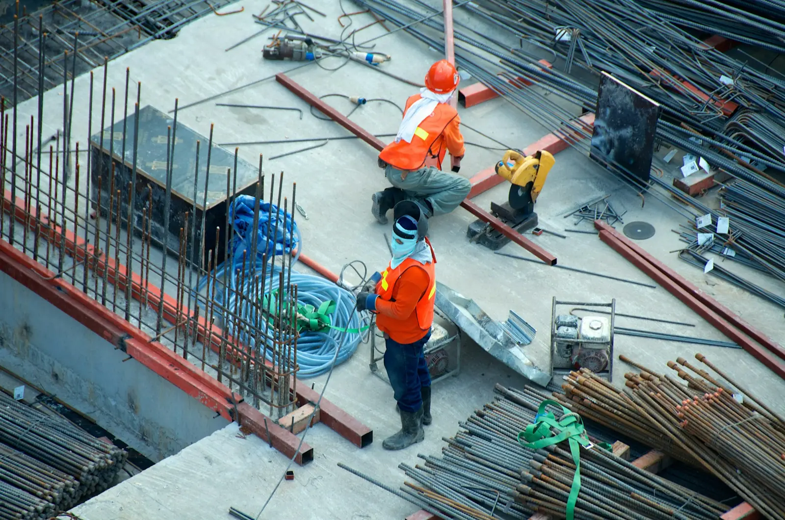
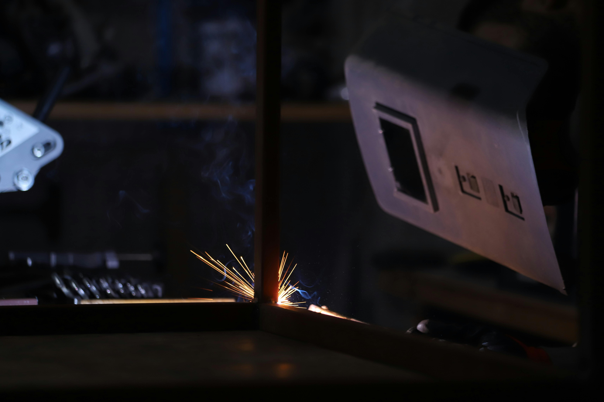
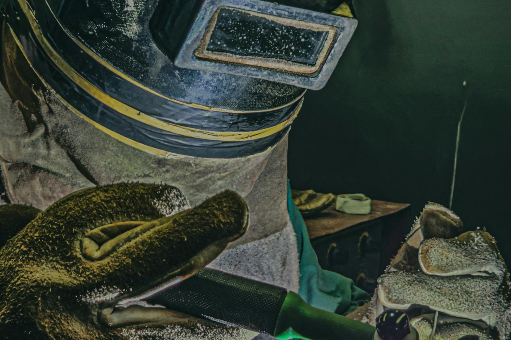
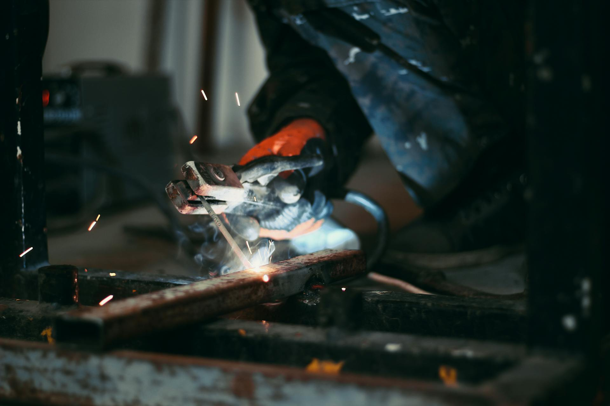
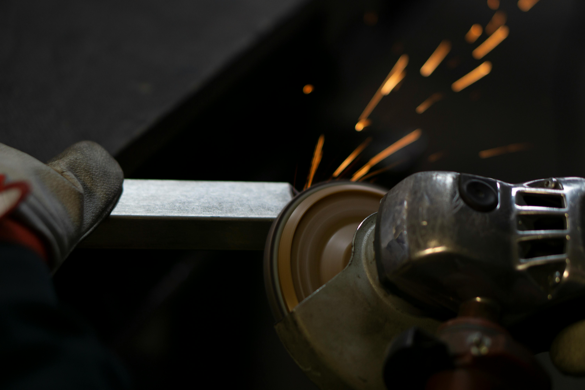
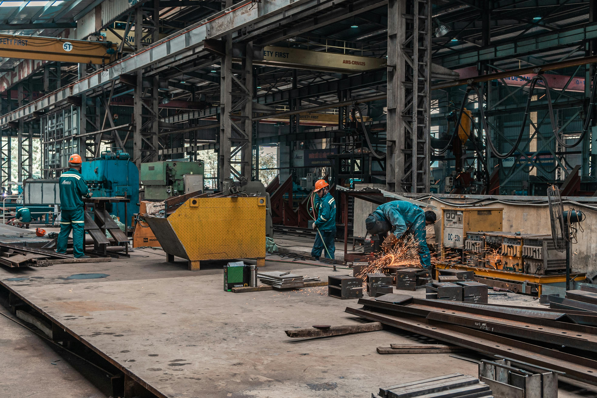
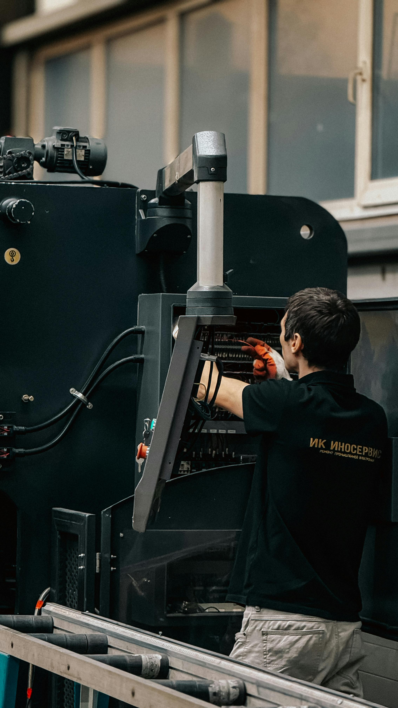
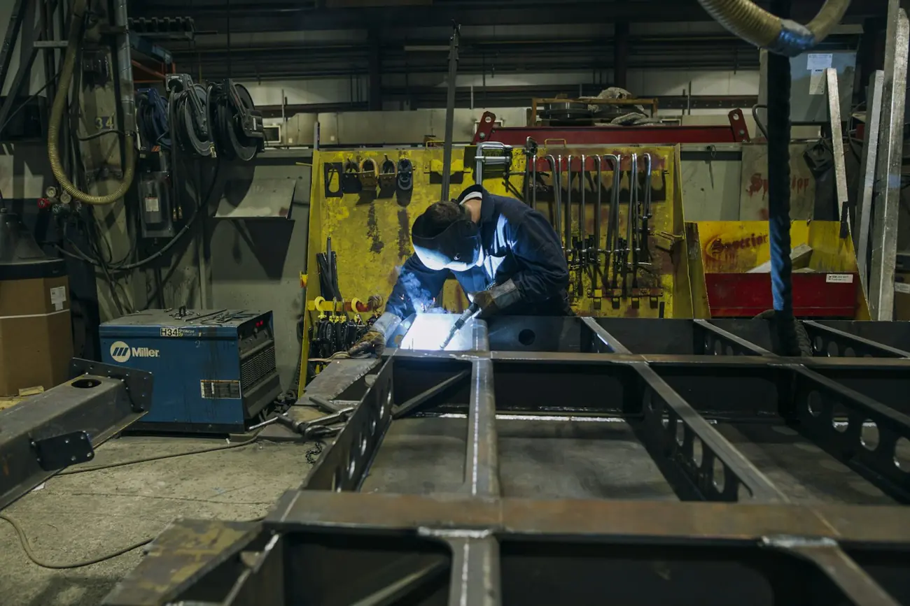

Obras e Projetos Operacionais
Apoio a obras em curso: organização de recursos, acompanhamento de necessidades e alinhamento com o projeto.
Ver regiões de atuaçãoPortugal · Obras · Indústria · Metalomecânica
A M&A Elo Profissional fornece equipas técnicas a empresas em Portugal — soldadura MIG/MAG, TIG, serralharia, tubagem industrial, montagem e manutenção metalomecânica. Resposta direta e acompanhamento do pedido ao terreno.
NIF 518 954 170 · Lisboa · Aveiro · Viana do Castelo
Serviços técnicos






M&A Elo Profissional, Unipessoal, Lda.
A M&A Elo Profissional presta apoio técnico a empresas industriais em Portugal. Soldadura MIG/MAG e TIG, serralharia, tubagem, montagem e manutenção metalomecânica — equipas analisadas para cada projeto, com acompanhamento direto do primeiro contacto ao terreno.
Cada pedido de empresa é avaliado com critério operacional: contexto do projeto, função técnica, região e requisitos específicos. Com responsabilidade em cada resposta.

Setores de atuação
Obra, indústria e metalomecânica são contextos que exigem rigor, organização e profissionais experientes. A M&A Elo atua nesses contextos com seriedade e análise humana.

Apoio a obras em curso: organização de recursos, acompanhamento de necessidades e alinhamento com o projeto.
Ver regiões de atuação
Profissionais para contextos industriais e metalúrgicos, com perfil analisado para cada posto e contexto.
Ver serviços técnicos
Serralheiros, soldadores e pintores industriais para obras de estrutura metálica, montagem e manutenção.
Ver serviços técnicosApoio operacional industrial
A M&A Elo analisa cada pedido de empresa com critério operacional — contexto do projeto, função técnica, região e requisitos específicos — antes de qualquer resposta.
Regiões


Regiões de obras atuais. Novas obras e regiões são adicionadas conforme projetos em curso. Ver todas as regiões →
Área de Profissionais
Processo gerido internamente pela equipa M&A Elo. Cada perfil é analisado individualmente, com acompanhamento responsável em cada fase.
Soldador · Serralheiro · Pintor Industrial · Outras funções técnicas ligadas a obra, indústria e metalomecânica
Como funciona
Envie mensagem pelo WhatsApp com a função pretendida e região de disponibilidade.
A equipa M&A Elo analisa o contexto, experiência e disponibilidade real de deslocação.
Preenchimento do formulário específico à função, com documentação quando disponível.
Resposta e acompanhamento quando existir projeto compatível com o perfil e região.
A empresa não disponibiliza alojamento. O profissional deve ter disponibilidade real de deslocação. Condições são comunicadas pela equipa após avaliação do perfil.
Disponível agora — contacto direto
Fale pelo WhatsApp. A equipa M&A Elo analisa o pedido com critério técnico e responde com clareza sobre o que é possível para o seu projeto e região.